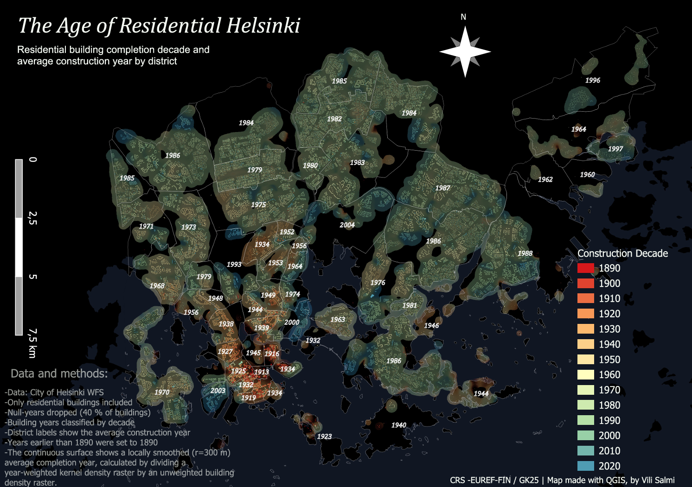

Cartographic Reflection
The first map from the beginning of the course is actually not bad, although it
may require some zooming in and out in some areas.
The choice of font and the map title are probably its strongest elements,
as I think the title describes the content quite well and does so in a visually pleasant way.
I will not even go too deeply into the scale bar, as it is rather unfortunate.
At the time, I clearly had no idea where to place it.
The data presentation works better in the outer areas of Helsinki,
where the districts are larger and the building years tend to be more similar
within each district. In the central parts of Helsinki, however,
the map becomes somewhat cluttered. The districts are smaller there,
and presenting the average construction year for each district becomes more distracting
than informative. The district boundaries also work better in the outer parts of Helsinki,
while in the centre they are not always clearly visible.
On the other hand, they were never meant to be the main focus of the map.
The idea was to keep them subtle, while still making it possible to understand where
the district borders are.
I am still not completely sure how well the heatmap behind the buildings works.
In some ways, it looks a bit clumsy, but on the other hand,
it does smooth out the variation within each district quite well.
It also gives a nicer overview of the area than the building colours alone.
The colour scale chosen for the buildings is probably not the best.
I am not sure if the colours themselves are bad, but against the dark background they
create a slightly spooky, almost Halloween-like impression.
I am also not fully sure why I originally chose a dark theme,
as it makes the map feel somewhat aggressive. The main colour of the heatmap is slightly
yellowish, and for that reason the dark background works fairly well,
since yellow can easily disappear on a white background.
Nevertheless, it might have been better to change the colours of the heatmap and
buildings instead of changing the entire background to a dark one.
At the time, however, I felt that dark-themed maps looked cool, and I still think they often do.
The Data and Methods section could be smaller and should have more breathing room,
as it now feels slightly overstated. Still, the information itself is concise and informative.
The north arrow is also far too emphasized and becomes an unnecessary eye-catcher.
The legend is quite basic, although I still think it was a good idea to categorize the buildings by construction decade.

View full-size map
Description of data
For the data description, I'll start with the "why it interests me" -part. I am a big fan of football,
and as there is the World Cup going on, it felt instantly good idea to make something out of it.
Qualified Teams by Confederation
The first map shows the global distribution of qualified teams and how the
48-team tournament is divided between FIFA confederations.
 View full-size map
View full-size map
16 Stadiums, 4 Time Zones
The second map focuses on the host cities and stadiums across Canada,
the United States and Mexico.
 View full-size map
View full-size map
Interactive Team Travel Routes
The final map explores how teams move between stadiums during the group stage.
Use the layer menu to compare individual team routes.